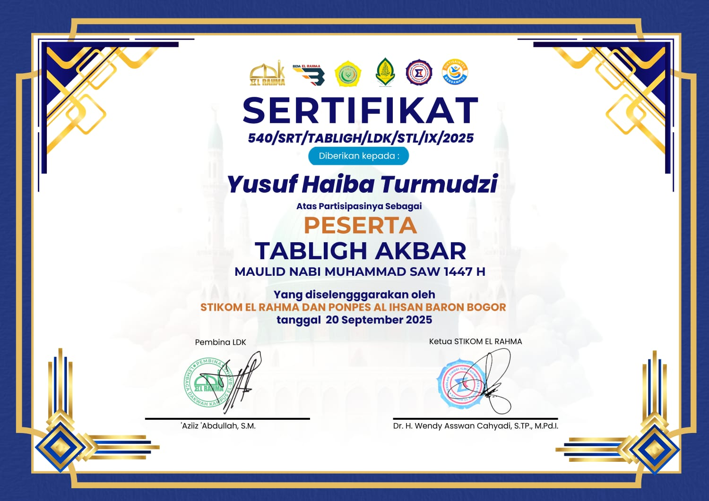
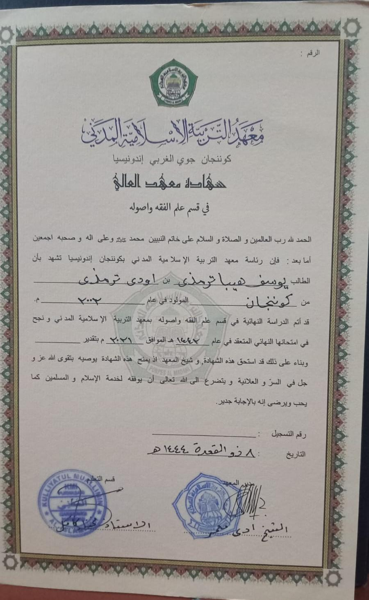
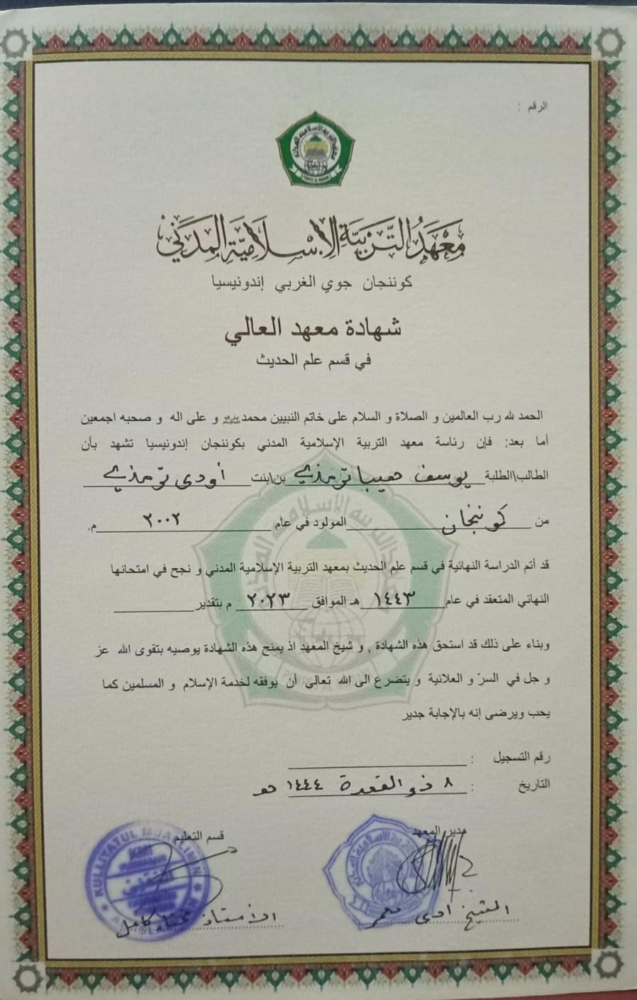

Project Terbaru
Beberapa karya yang telah saya buat
To Do list
To-do list (daftar tugas) adalah alat manajemen waktu yang digunakan untuk mencatat semua hal yang perlu Anda lakukan.
Web pendaftaran sederhna
Web pendaftaran adalah platform digital yang berfungsi untuk mengumpulkan data calon peserta secara online untuk suatu kegiatan, institusi, atau layanan.
Pengalaman Saya
Perjalanan karir dan aktivitas
Pengabdian Sebagai Santri
2014-2023Menimba ilmu di pondok pesantren, mempelajari berbagai kitab kuning, manajemen waktu, dan kedisiplinan yang menjadi bekal hidup
Musyrif kamar Dan Mengajar di Pondok Pesantren Al Muchtar Bekasi
2023 - 2025Mengabdi sebagai tenaga pengajar di pondok pesantren, mendidik santri dalam ilmu agama dan bahasa Arab, serta membentuk karakter Islami.
Musyrif Kamar Dan Mengajar di Pondok Pesantren Al Ihsan Baron Bogor
2025 - SekarangMengabdi sebagai tenaga pengajar di pondok pesantren, mendidik santri dalam ilmu agama dan bahasa Arab, serta membentuk karakter Islami.
Sertifikat
Bukti penghargaan


Tabligh Akbar Maulid Nabi SAW 1447 H
Berkumpul dengan orang-orang sholeh dan mendengarkan ceramah dari salah satu Habaib.
Lihat PDF Selengkapnya

Ma'had Aly 1 (Dauroh Fiqih)
Dauroh fiqih adalah program belajar yang intensif untuk memperdalam pemahaman tentang tata cara ibadah atau aturan praktis kehidupan sehari-hari berdasarkan hukum Islam.
Lihat PDF Selengkapnya

Ma'had Aly 2 (Dauroh Hadis)
Dauroh hadits adalah program belajar yang intensif untuk membaca, menghafal, atau membedah kumpulan hadits Nabi SAW guna memahami panduan hidup yang diajarkan oleh Rasulullah SAW.
Lihat PDF Selengkapnya
Hubungi Saya
Mau kolaborasi bareng atau sekedar ngopi virtual? jangan sungkan untuk mengirim pesan,ya!"